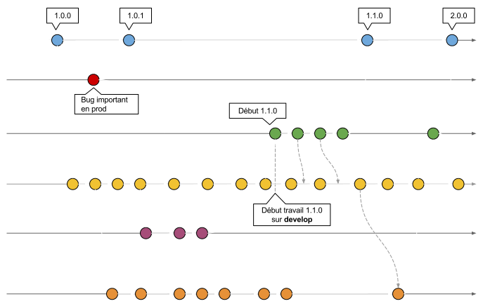

Let's talk about
Git

Salut vieille branche !
@BastienTanésie / Wixiweb / LFT #5
Copyright © 2016, Wixiweb
Y'a quoi au menu ?
- Git ≠ SVN
- Git Flow
- Gitlab (en bonus)
Git ≠ SVN
Pourquoi changer un truc qui fonctionne ?
Git ≠ SVN
| Git | SVN |
|---|---|
| Système distribué et centralisé | Système centralisé |
| Branching comme base du workflow | Branching basique mais peu pratique |
| Gestion évoluée des droits | Gestion assez pauvre des droits |
Révision en hash SHA1 |
Révision incrémentale |
| Checkout complet du dépôt | Checkout partiel |
| Nombreux workflows possibles | Workflow centralisé unique |
| Gestion avancée de l'historique | Impossible d'annuler un commit |
Multiples remotes |
Unique dépôt distant |
Et la stat qui met tout le monde d'accord…
Git ≠ SVN
| Git | SVN | |
|---|---|---|
| 1to1 English | 330 Mo | 2.4 Go |
| Mozzila | 420Mo | 12Go |
C'est peut-être pas la taille qui compte, mais bon, à ce point-là…
Git ≠ SVN
Points forts de Git
- Les branches
- Le travail en local
- La vitesse des opérations
- La staging area, les patches, etc.
∺
Créé par Linus Torvalds
De nombreux projets passent à Git
Linux, Perl, Eclipse, Gnome, KDE, Ruby on Rails, Android, PostgreSQL, X.org, etc.
Git Flow
Git Flow
- Créé par Vincent Driessen entre 2009 et 2010
- Méthodologie basée sur les branches
- Nombre d'acteurs illimité high scalability
- Condition: releases espacées dans le temps
Git Flow
Quand j'ai découvert ça …
Gitlab
Et si GitHub lui-même était Open Source ?
Gitlab
Pourquoi Gitlab ?
- GitHub en version Open Source
- Maintenu par Gitlab Inc.
- De plus en plus d'utilisateurs et d'entreprises
- Mises à jour mensuelles
- Installation et maintenance faciles
- Full featured
Gitlab
Fonctionnalités principales
- Activity feed, network, graphs
- Repo/file browser, file edition
- Wiki (+ markdown)
- Merge requests
- Issue tracker
- Code snippets
- Web Hooks
- Groupes de projets
- Gestion de droits
- Branches privées
- 2-factor authentification
- Gitlab Continuous Integration